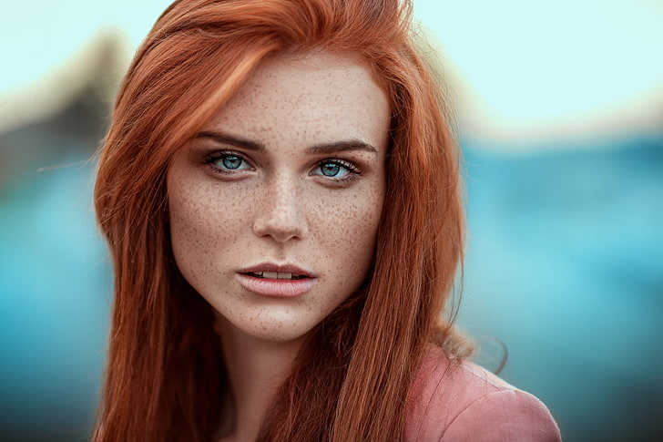

Alice Augusta LongbottomAbout:1. Alice Augusta Longbottom was born to Neville Frank Longbottom and Hannah Amelia Abott on July 28 2008. 2. Her only sibling is Frank Algie Longbottom. 3. She was sorted into Gryffindor house when she first went to Hogwarts School of Witchcraft and Wizardry in 2019, at the age of 11. 4. Her godparents are Harry James Potter and Ginevra Molly Weasley. 5. She is a Pure blood witch. 6. She wasn't appointed as Prefect, Head Girl or Quidditch Captain. 7. She is considered the clumbsiest girl in School Characteristics: 1. Clumbsy 2. Stubborn 3. Lazy Possesions: 1. Abott family heirloom i.e. Abott Gold Bangle with Moonstones and Diamonds(Goblin-Made) 2. A 10", Maple Wood, Unicorn Hair Core Wand 3. Cleansweep Eleven (broomstick) Other Details: Eye Colour - Blue Hair Colour - Red Height - 131cm (1st year) Height - 165cm (7th year) Species - Human/Witch Gender - Female Patronus - Mongrel Dog Boggart - Marco Malfoy Favourite Colour - Lavender Nickname - Allie Speciality - Drawing Later Life: Married To - James Sirius Potter Kids - Scarlett Ginevra Potter (May 7, 2032 ), Augusta Lily Potter (August 1, 2034 ), Hendry James Potter (July 11, 2035) Professions - Auror |
 |